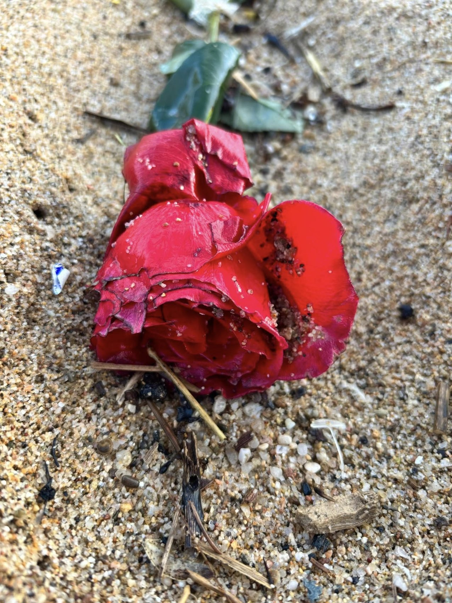

About Sharon Rose
Sharon Rose is a singer, songwriter, and musician from Thunder Bay, Ontario, whose music blends folk, pop, jazz, and musical theatre influences. Through heartfelt lyrics exploring self-love, nature, joy, and human connection, Sharon Rose creates music that reflects on love, friendship, aging, depression, and the courage to live fully and authentically as you are.
Her musical journey began at just three years old, singing in churches, before developing into a passion for songwriting and live performance. By age sixteen, she was performing original music throughout Thunder Bay and went on to record her first album as a young artist.
An active presence in Thunder Bay’s arts community, Sharon Rose has performed in numerous concerts, community events, and theatrical productions. Her recent stage credits include Magnus Theatre’s Lies and Legends: The Musical Stories of Harry Chapin and Stan Rogers’ A Matter of Heart, as well as Magnus Theatre in Education’s 10x10 Play Festival.
Alongside her performing career, Sharon Rose has dedicated over two decades to music and drama education, helping thousands of young people discover the joy of creative expression through music and theatre.
Now returning to the recording studio with a renewed focus on her original songwriting, Sharon Rose is preparing to release her second album in fall 2027, produced by Jean-Paul De Roover at Blueprints Studio — a new chapter in a lifelong musical journey.
Artist & Press InformationUpcoming Performances=
Performance dates, venues, times, gig posters and ticket links will appear here once confirmed.
Photos & Performances

In the Recording Studio
Explore authentic behind-the-scenes photographs from the making of Sharon Rose’s next album, produced by Jean-Paul De Roover. Coming fall 2027.
View the Recording Studio GalleryNew Original Music · Fall 2027
ROSE
2027
Second Album · Fall 2027
Sharon Rose is preparing her second album of original music, produced by Jean-Paul De Roover at Blueprints Studio. The songs explore courage, self-acceptance, connection, and the pursuit of joy. The album title and release date will be announced when confirmed.
Album title, cover art and exact release date have not yet been announced. The square graphic is a temporary placeholder, not album artwork.
Joy Mantra
An uplifting invitation to call more joy, light, and love into everyday life — and to share that joy with others.
Sharon Rose’s song “Joy Mantra” invites people to raise their voices together. Fellow musicians will contribute their voices to the album in a future studio session. A behind-the-scenes performance video may be shared here later.
This is a preview of a song in development, not a released recording.
Music & Discography
First Album · Early Recordings
Recorded when Sharon Rose was 18, her first album marks the beginning of her recorded musical journey. Original artwork, track information, and listening options can be added here.
The Next Chapter
Her second album is planned for fall 2027. This space will grow with new singles, videos and release information as they become available.
Merchandise
A storefront-style preview of your merchandise, with product photographs, prices and buttons connecting visitors to your store.
Product One
Photo, price and purchase link to be added.
Product Two
Photo, price and purchase link to be added.
Music & More
Album and merchandise items can appear together.
These are examples of the shop layout, not products currently available for purchase. We'll link them to Shopify when you provide your store address.
Artist & Press Information
Sharon Rose is a Thunder Bay singer-songwriter, musician and performer whose work draws on folk, pop, jazz and musical theatre.
New Original Album Coming Fall 2027
Sharon Rose is preparing to release a new album of original music in fall 2027, produced by musician and producer Jean-Paul De Roover at Blueprints Studio.
Blending folk, pop, jazz and musical theatre influences, the project explores courage, self-acceptance, joy, resilience and human connection. The album marks a renewed focus on original songwriting and recording, following her first album recorded as a young artist.
The album is in development. Its title, final release date and recordings have not yet been announced publicly.
Performance & Theatre
- Lies and Legends: The Musical Stories of Harry Chapin — Magnus Theatre
- A Matter of Heart — Magnus Theatre production celebrating the music of Stan Rogers
- 10x10 Play Festival — Magnus Theatre in Education
Sharon Rose also performs original music, acoustic sets and community concerts throughout the Thunder Bay area.
Selected Media Coverage
- Paying Homage to Stan Rogers — The Source, July 2026
- Fantastic Homage — TB Source, July 2026
- Lies and Legends: The Musical Stories of Harry Chapin — coverage by TBnewswatch
Additional reviews, article scans and publication links can be added to this press section.
Publicity & Booking Materials
Read the full Sharon Rose artist biography or view her performance photographs.


Private live-performance videos and further materials are available to festival programmers and presenters upon request.
Follow Sharon Rose
Follow along for new music, live performances, and behind-the-scenes studio moments!